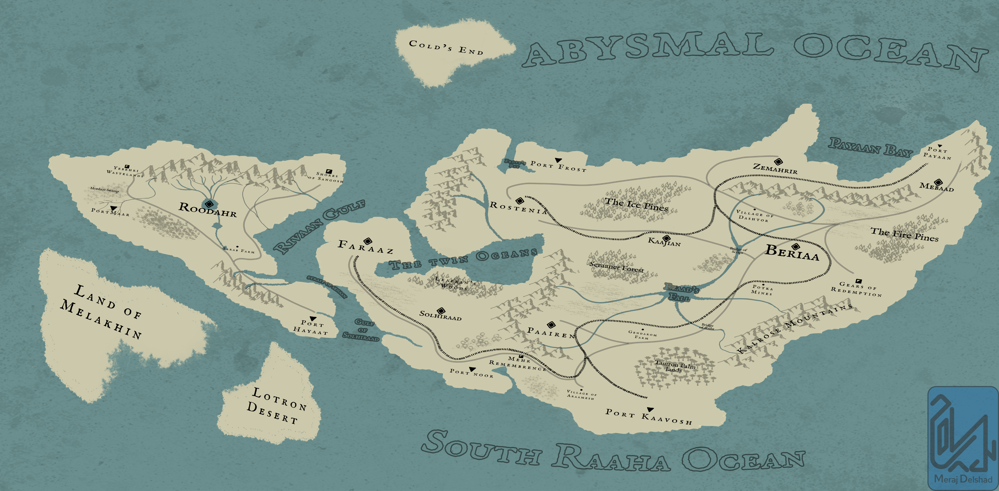
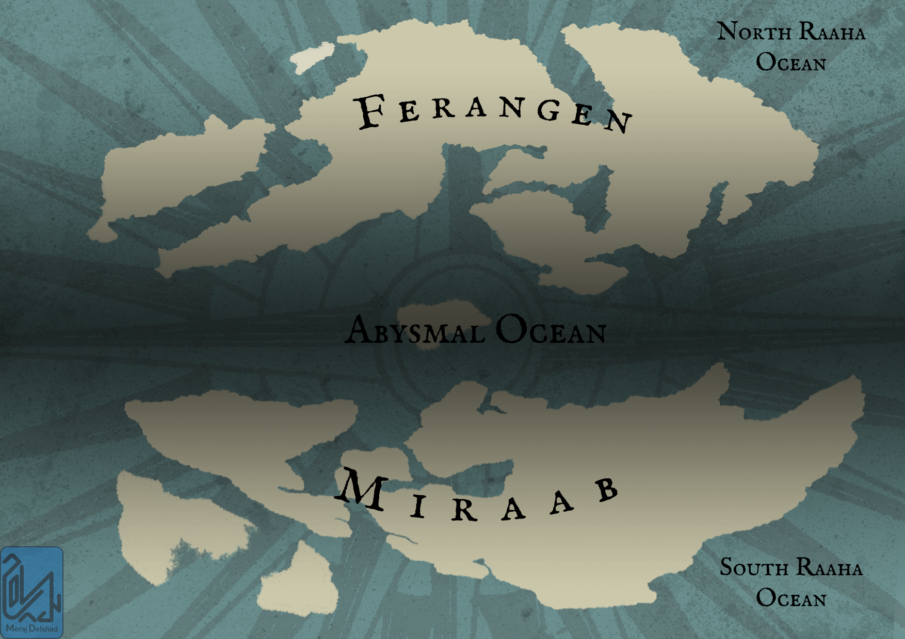

← Back to Work


Fallen Giti
Fallen Giti is my personal fantasy world. I created the world's map in Photoshop, developing its geography, locations, and names through a combination of design and imagination.
World Map

Map of Miraab

Map of the Continent
World Concepts
I created a series of visual concepts for the world using Stable Diffusion 1.5 and ControlNet. These images explore the environments, locations, and visual identity of Fallen Giti.